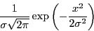

Next: Interface tabs
Up: ITK Recursive Gaussian Gui
Previous: Quick Start
Base class for computing IIR convolution with an approximation of a Gaussian kernel.

RecursiveGaussianImageFilter is the base class for recursive filters that approximate convolution with the Gaussian kernel. This class implements the recursive filtering method proposed by R.Deriche in IEEE-PAMI Vol.12, No.1, January 1990, pp 78-87, "Fast Algorithms for Low-Level Vision"
sara
2010-05-31